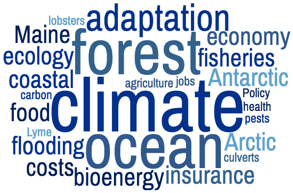
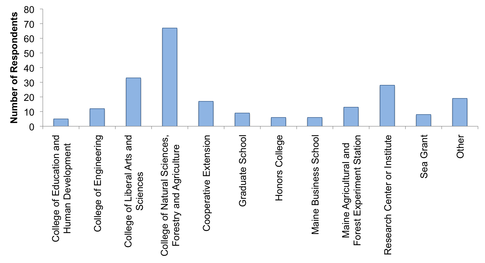

In early 2016 a survey was distributed to the 1541 individuals listed in faculty, part-time faculty association, and salaried employee e-mail directories. The primary aim of the survey was to better define the expertise and resources at the University of Maine on the broadly defined subject of our changing climate and to strengthen awareness, communication and coordination at our institution. This survey was intended to identify both those who consider climate change part of their program identity, as well as those whose expertise relates to changing patterns of temperature, moisture, and atmospheric chemistry and the consequences of these changes to our environment and economy. Respondents were asked to describe their participation in research, teaching, and outreach related to these topics and the responses, with the individual's consent, are contained here. We hope this ‘directory of expertise’ can be used to create synergies on campus and help those within the State of Maine (and beyond) better connect to the information and expertise they seek. This directory is intended to be a living repository that will evolve and be updated over time.
We encourage new participants to become part of the directory and welcome updates from those already having a directory page, at any time. Contact Nicole Spaulding, Climate Change Institute: nicole.spaulding@maine.edu.

This initial 2016 survey elicited the following responses:

The 'Research Center or Institute' and 'Other' Categories include the following: